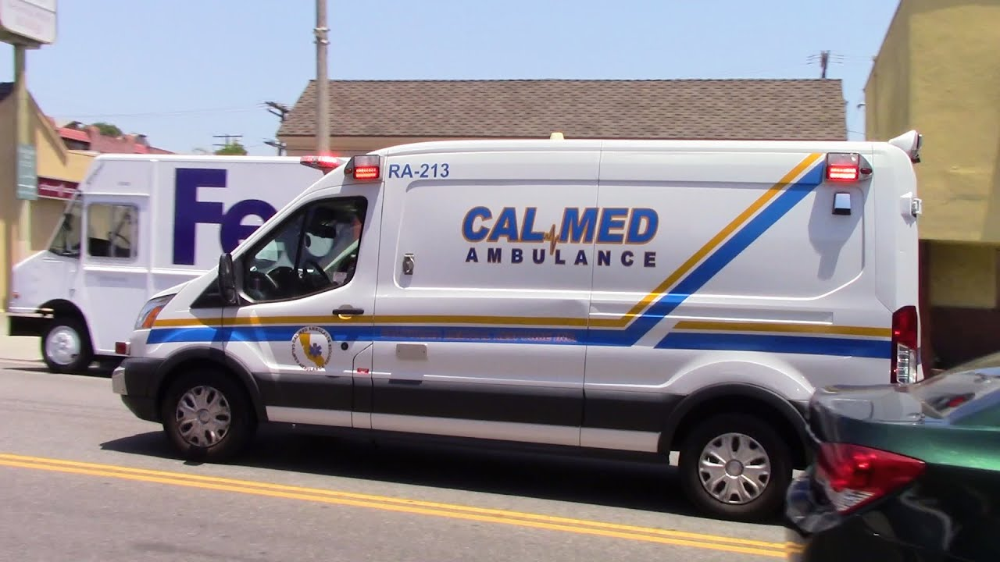
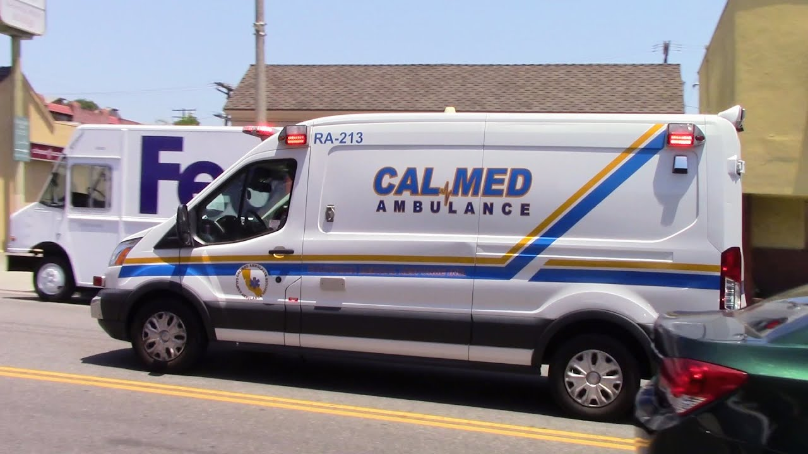
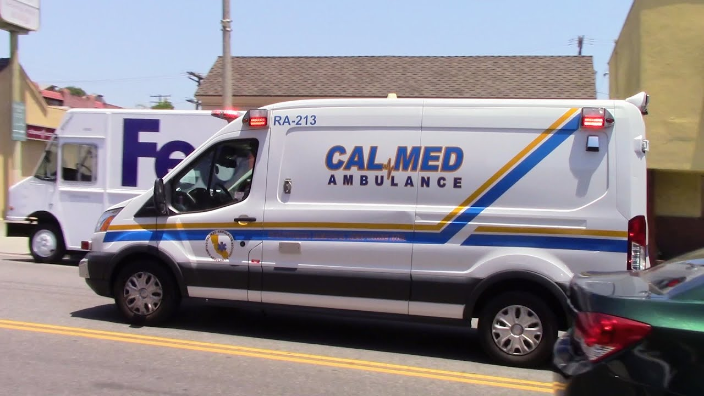

Kevin Cheng
I am a current student at the University of California, Riverside, where I am studying as a Biology Major. Once I get my Bachelor's degree, I will try to continue my education at a medical school. I have already entered into the medical field recently as an Emergency Medical Technician. From my brief stent as a Emergency Medical Technician, I have already learned about the difficulties working as in medical field as I have already been exposed to ugly side of the medical field.
Even before working as an Emergency Medical Technician, I was already exposed to the medical field as a volunteer at St. Judes Hospital where I have volunteered for over 3 years. There, I worked to assist Nurse and Doctors with their jobs. On some occasions, I was able to observe medical procedures that were being preformed in the Surgery Rooms.
Other than professional experience, I have been apart of many organizations that have played a large part guiding me to who I am currently. I have been apart of Boy Scouts of America, Key Club, and Project Lead the Way. All of these have taught me important lessons that I still use today. Without being apart of them, I would have most definietly gone down a differnet path.
Experience
Volunteer
• Observed Medical Procedures
• Maintained Medical Equipment
• Assisted Nurses with Patient Care
Education
UC Riverside
Walnut High School
Portfolio


 

